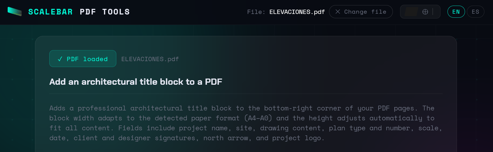
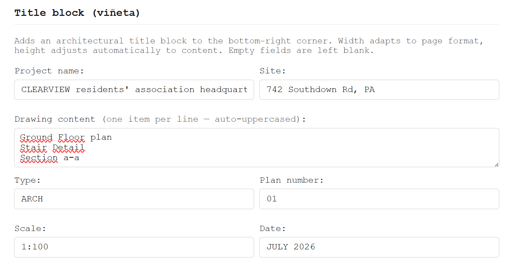
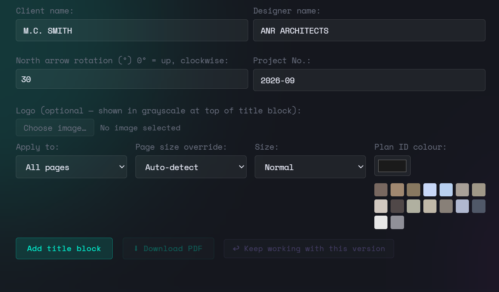
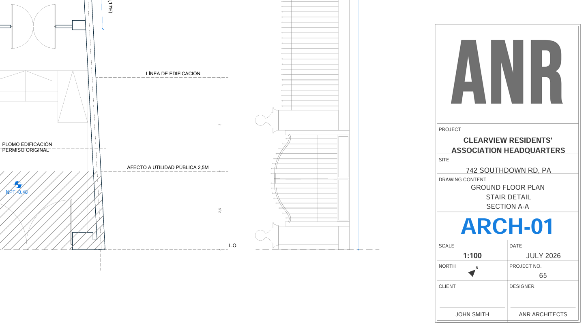

Every set of architectural drawings needs a title block. The problem is that once a drawing is exported to PDF, adding one properly usually means going back to the original file or placing a rasterized image. Neither is ideal. So I built a tool that draws the block as native PDF vector content — the same way it would come out of a CAD application. You can find it here.
The block anchors to the bottom-right corner, its width adapts to the detected paper format (A4 through A0), and its height adjusts dynamically to the amount of text you enter. Empty fields are simply left out — the block contracts accordingly.
STEP Open the Title Block tool and load your PDF
Navigate to the Title block tool from the homepage and click Choose PDF. The file is processed entirely in your browser — nothing is sent to any server at any point.
If you have a multi-page plan set, you can apply the title block to all pages at once or to the first page only. The tool detects each page's paper format independently, so the block width will adapt correctly even if your set mixes A1 and A3 sheets.

STEP Fill in the project data fields
The tool provides a set of standard architectural fields. All text is automatically uppercased. Fields left empty are omitted from the block — the layout contracts cleanly around whatever you provide.
| Field | Notes |
|---|---|
| Project name | Main header of the block. Displayed large and bold. Wraps to multiple lines if long. |
| Site | Address or location. Also wraps automatically. |
| Drawing content | One item per line — e.g. "Ground Floor Plan", "Section A-A". Each line is centred in the cell. |
| Type / Number | Combined into the plan ID (e.g. ARCH-01). Displayed large in a dedicated row with a colour of your choice. |
| Scale / Date | Side by side in a split row. Scale is displayed bold. |
| Client / Designer | Signature row with a blank space and a signature line above each name. |
| North rotation (°) | 0° points up. The arrow rotates clockwise. Leave at 0 if north is at the top of your drawings. |
| Project No. | Shown in the same row as the north arrow, bottom-aligned. |
| Logo | Optional. Uploaded as any image format, converted to greyscale, and placed in a top row whose height adapts to the image's aspect ratio. |

STEP Adjust size, colour and page format
Three options let you fine-tune the result: Size (Small / Normal / Large) scales the entire block proportionally from the bottom-right anchor — useful for busy sheets or presentation drawings. Plan ID colour sets the colour of the plan number (e.g. ARCH-01); the tool detects the colours already present in the PDF and offers them as swatches so you can match the drawing style in one click. Page size override should normally stay on Auto-detect, but can be set manually if the PDF uses a non-standard format.
The block is drawn as pure PDF vector content — lines, rectangles and text operators — so it is resolution-independent and survives any subsequent compression or merge operation without quality loss.

STEP Apply and download — or continue working on the same file
Click Add title block. The block is drawn into the PDF content stream of each selected page. Download the result immediately, or click ↩ Keep working to promote the output as the active file and apply further tools in the same session — a scale bar, a watermark, compression — without any intermediate downloads.

How block width is determined
The block width follows a fixed mapping to ISO paper formats: 36 mm on A4, 50 mm on A3, 59 mm on A2, 68 mm on A1, and 77 mm on A0. These values correspond roughly to 1/6 of the page width — wide enough to be readable, narrow enough to leave the drawing untouched. All internal dimensions (font sizes, padding, row heights) scale proportionally from this width, so the block looks correct on any sheet size without any manual adjustment.
If you select a size multiplier (Small = ×0.82, Large = ×1.20), the entire block is scaled from the bottom-right anchor point. The width changes, but the position relative to the page corner remains constant.